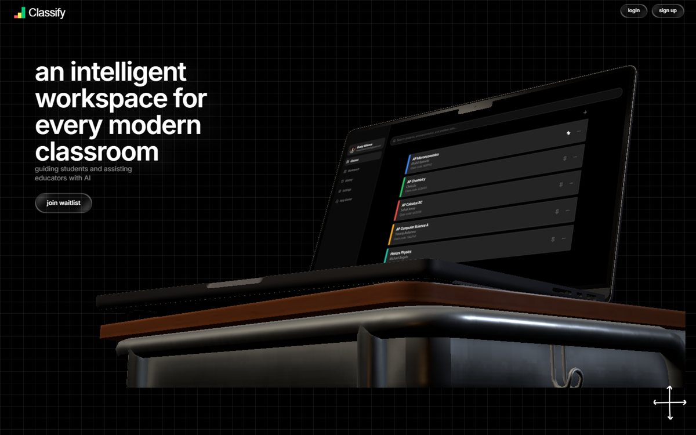

I aim to become a well-rounded developer.
I'm a Computer Engineering student at Georgia Tech. Truthfully, I am drawn to all disciplines and layers of computer engineering, but I lean torwards writing bare metal code that sits right on the silicon.
- 2012Used a computer for the first time to visit Starfall
- 2018Created my first program using ProcessingJS on Khan Academy
- 2026Studying Computer Engineering at Georgia Tech
- 2028???
Work
A product I co-founded, an interpreter written from scratch, and a radio wave positioning tool I created. Each one has its own page.
-
Classify
Co-founder, Present pursuit
A virtual tutor that reads students’ handwritten work step by step, shows them where they went wrong and guides them to the fix instead of giving the answer. Our team of six were accepted into Franklin CREATE! and received a $7,500 grant at UGA.
Gemini API · Supabase

-
CHIP-8 interpreter
Personal C project, December 2025
Interpreter built from scratch that runs CHIP-8 ROMs using SDL2 for graphics, input and audio. It models 4 KB of memory, sixteen registers and a subroutine stack. The display on the right is that same C code, compiled to WebAssembly and running a demo ROM.
C23 · SDL2 · GNU make
Skills
- Languages
- C
- C++
- Python
- Java
- SQL
- TypeScript and JavaScript
- Tools
- Git and GitHub
- Unix and Linux
- GNU make and SDL2
- Supabase
- MATLAB
- Raspberry Pi and Arduino
- Hardware
- Soldering
- PCB assembly
- Functional testing
- Oscilloscope
- Multimeter
Get in touch
I’m looking for a summer 2027 internship in hardware/software engineering or embedded systems. Email is the fastest way to reach me.